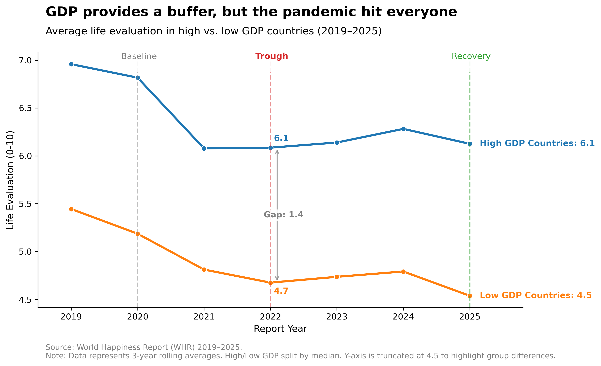
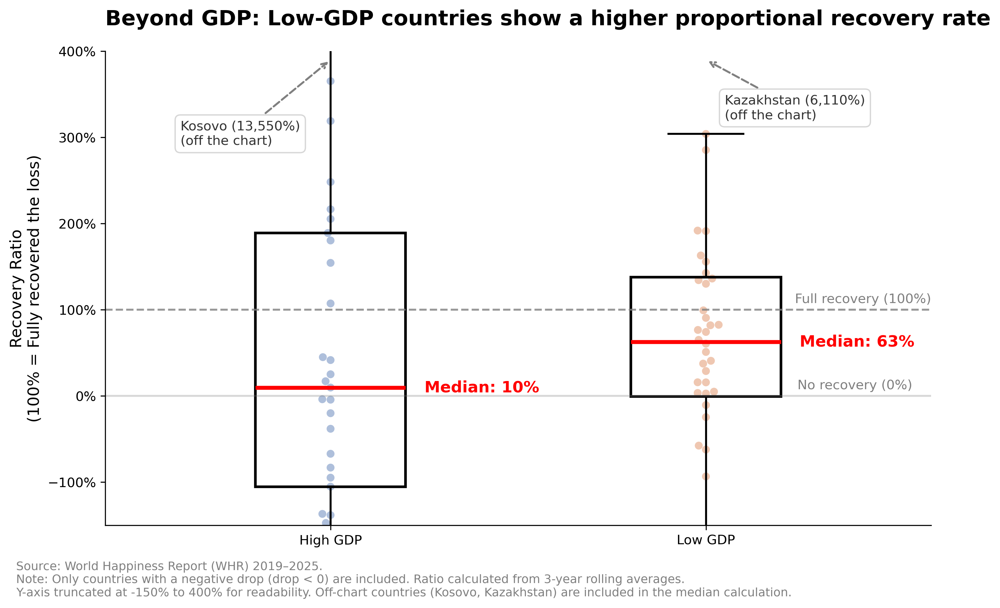
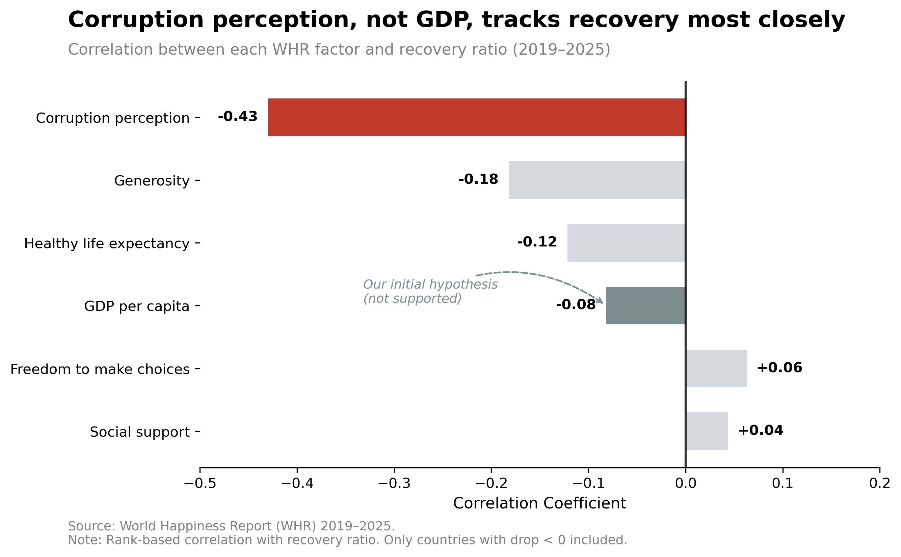

Beyond GDP: What Drives Happiness Recovery Post-COVID?
When the pandemic hit, we assumed the richest countries would bounce back the fastest. They had the money, the healthcare, and the resources. Yet, the data tells a different story. In fact, the countries that recovered the largest share of their lost happiness were often the ones with the lowest GDP. How can poorer nations out-recover the wealthiest ones? And if money doesn't buy resilience, what does?

In Figure 1, the temporal context is established. It demonstrates that while happiness overall decreased due to the pandemic, high-GDP nations kept a higher floor. They maintained their absolute evaluation scores above 6.0 and held a 1.4-point lead over low-GDP countries during the 2022 trough. This effectively illustrates how GDP acted as a buffer against the initial shock.
However, does a higher GDP guarantee a faster recovery?

Figure 2 reveals a paradox. By calculating the relative recovery ratio among countries that experienced a drop, the analysis finds that low-GDP countries achieved a much higher median recovery rate. They recovered 63% of their lost ground, whereas high-GDP countries recovered only 10%.
While the chart shows extreme outliers like Kosovo (13,550%) and Kazakhstan (6,110%) due to near-zero initial drops, the median reflects a broader reality: Low-GDP countries generally suffered deeper collapses, meaning any rebound looks proportionally huge. Despite this mathematical vulnerability, the overarching pattern remains clear: while GDP is a buffer, it is not the engine for recovery.
If GDP is not the engine, what is the real factor?

Since GDP cannot explain the speed of recovery, Figure 3 investigates the real indicator. The correlation analysis shows that corruption perception plays the most critical role. Corruption perception has the strongest negative association (-0.43) with recovery, meaning lower corruption is associated with weaker recovery. This is not because corruption is beneficial, but because clean countries had highly stable baselines and barely fell at all. In contrast, GDP per capita sits near the center (-0.08), indicating a very weak relationship.
Moreover, freedom and social support show a small positive correlation (+0.06, +0.04), but their effect sizes are negligible. Compared to the negative impact of corruption, these weak positive factors have minimal predictive power for recovery speed. This confirms that corruption perception, rather than GDP or other positive factors, is the most robust indicator associated with recovery.
Three takeaways:
- GDP wealth provides a buffer, but it is not the engine for recovery:
The high-GDP countries successfully maintained a higher baseline of life evaluation during the pandemic's trough (Figure 1). Yet, their wealth advantage did not guarantee a faster happiness recovery. - Low-GDP countries show higher proportional resilience, with a caveat:
Compared to high-GDP countries, low-GDP countries recovered a much larger percentage of their lost happiness (63% vs. 10%). - Low corruption is the real indicator of recovery:
Figure 3 shows that higher corruption perception scores (meaning less corruption) have a strong negative correlation (-0.43) with the recovery ratio. Good governance acts as a powerful structural buffer against shocks.
Why this matters: The Bangladesh Case
Figure 4 places Bangladesh directly alongside the sample median on four key indicators, revealing a stark reality. Economically, Bangladesh is not an outlier: its GDP (1.35) is very close to the sample median (1.58). However, its life evaluation plummets to 4.32, far below the median of 5.99.
The real reason lies in the last two bars. The chart shows that Bangladesh's governance is weak, with its perceived corruption (0.09) below the median (0.11). More importantly, look at its social support: only 0.24, compared to a median of 1.30. This is the tragedy of a failed system.
A country may possess average wealth, but when corruption is rampant, the funds intended to build a social safety net vanish.
When a system is consumed by corruption and lacks social support, it completely loses its ability to protect its citizens.
So, what does this have to do with us?
Because it proves that even high GDP cannot protect you if the system collapses. Demanding a clean and accountable government is not merely a political slogan, but the most direct way for citizens to protect their daily lives. This gap will never close on its own; it must be bridged by the people.